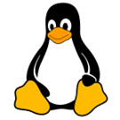
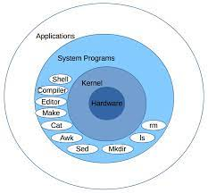
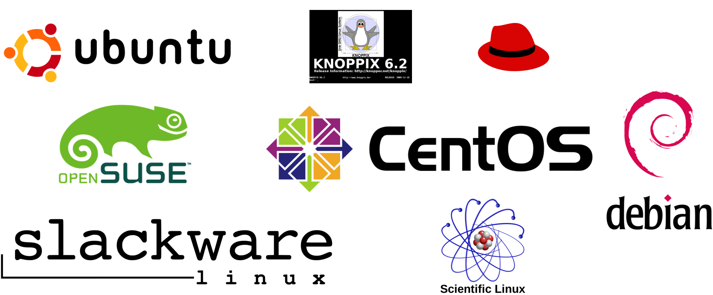
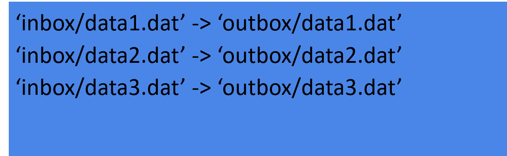

Linux
The “operating system” of the UPPMAX and most of the other clusters is Linux.
Questions
What is Linux?
How to use the command line?
Objectives
We’ll briefly get an overview of Linux
How the command line works
Some text editors
Things to be aware of
What is Linux?

Daily speaking: The Linux Operating system is a UNIX like and UNIX compatible Operating system.
Linux is a “Kernel” on which many different programs can run.
The shell (bash, sh, ksh, csh, tcsh and many more) is one such program.

Actually, for it to be an OS, it is supplied with GNU software and other additions giving us the name GNU/Linux.
[Linux naming controversy]((https://en.wikipedia.org/wiki/GNU/Linux_naming_controversy)
Linux has a multiuser platform at its base which means permissions and security comes easy.
Linux comes in different distributions, dialects or, say, flavours.
UPPMAX runs CentOS and RedHat

Using the command line
Command line with bash (Bourne Again Shell)
A Unix shell and command language.
Often default shell
The command-line interface: the bash prompt $
bash can be seen as a program that finds and runs other programs
bash is scripting language that is referred to as a shell
(because it sits around the kernel making it easy to interact with)

The prompt
[info]$ program word1 word2 word3 […]
[info] is configurable, and usually tells you who you are, on what system, and where in the file system.
Example:
[bjornc@rackham3 linux_tutorial]$
For changing info (only for advanced users!) Does not matter for this course!:
The program to run is the first word
All words are separated by spaces
Example bash command
{kind=link}
{kind=link}
Terminal screen shows

Tab Completion
{kind=link}
Whenever you’re writing a path or filename on the bash prompt, you can strike the ‘tab’ key to ask Bash to complete what you’re writing.
Get in the habit of this — it will save you many hours!
Editing files with file/text editors
gedit
graphical user interface — GUI, needs X-server
Also graphical editor within MobaXterm
nano
keyboard shortcuts shown on-screen)
Cheatsheet: http://staffwww.fullcoll.edu/sedwards/nano/UsefulNanoKeyCommands.html
^ = Ctrl, M = meta key)
Windows M = Alt
On Mac: in the Terminal.app go to Preferences -> Settings -> Keyboard and turn on “Use option as meta key”: then M = Alt
Not to try today if you haven’t used before!!!
Warning
we suggest that you learn this tools before trying to work with them on UPPMAX
If you start one of these editors you may have difficulties to exit!
vim
fast and powerful, once you learn it
on UPPMAX started with command
viInsert mode (type like normal text editor. Press
ifor insert mode)
Command mode (give commands to the editor to get things done . Press
<ESC>for command mode)
Cheat sheet: https://coderwall.com/p/adv71w/basic-vim-commands-for-getting-started
gvim
vim with a GUI, lots of features very Fast
emacs
fast and powerful, once you learn it
Cheat sheet: https://www.gnu.org/software/emacs/refcards/pdf/refcard.pdf
(C =
<Ctrl>)
also With GUI
emacs –nwkeeps you in terminal window.
The graphical editors
When starting the graphical versions of an editor, add
&to be able to use the command line while program is open.Ex:
gedit &If not, you can
<Ctrl>+zand typebgto send program to background.
Try gedit
start gedit with
gedit &write something
save
- ``ctrl-C`` interupts a program or a command that is "stuck"
- ``ctrl-Z`` pauses a program, can be continues in background (``bg``) or foreground (``fg``)
- ``ctrl-D`` quits some programs
Typical sources of error
Warning
Capitalization matters in file names and program names
Spaces matter.
Always have a space after the program name.
Don’t add spaces within file names.
Check that you are in the right place in the file system.
File permissions. Check that the right read, write and execute permission are set. See next session.
Caution!!
Warning
There is no undo for:
copy (
cp),move (
mv), andremove (
rm).
Beware of overwriting files and deleting the wrong ones.
Note
Tip: make “
rm” ask if you really want to erase:Within a session: Type in the command prompt
alias rm='rm -i'
Override asking with
rm –f <>
Edit file
.bashrcinhomedirectory by adding the alias line for this to start everytime.
This will also work for
mvandcp!
Note
If you do destroy your data, email UPPMAX support, we may be able to help.
Keypoints
Linux Operating system is a UNIX-like and UNIX compatible Operating system.
Typical command: $ program word1 word2 word3 […]
Example of file editors
terminal
nano
vim
emacs
graphical:
gedit
Tips
use Tab completion
capitalization and spaces matters
no undo:s for copying, moving and removing
Solution:
alias rm='rm -i'